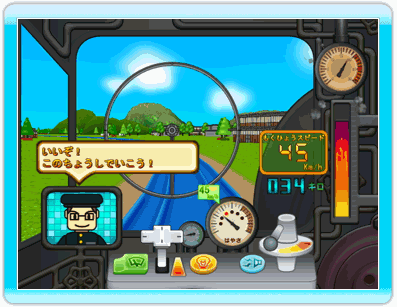
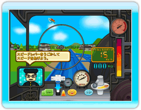
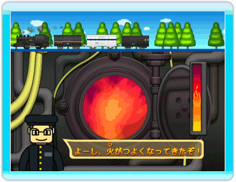
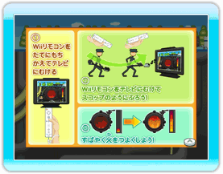
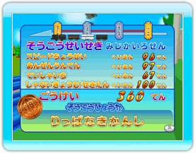
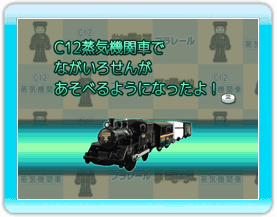

10 |
Ｃ１２ 蒸気機関車 ゲーム |
 |
|
石炭を燃やして蒸気の力で走る、Ｃ１２ 蒸気機関車を運転できるゲームです。 

ナビ画面で指示された通りに上手く運転していきます。  石炭を火にくべて、蒸気機関車の火力を上げるゲーム

Wiiリモコンを縦に持ち替えて、リモコンをスコップのように下から上に振って、石炭を火にくべます。

終点まで走ると、ゲームクリアとなります。 ※「むげんろせん」「フリーラン」のモードは、どこまでもすきなだけ走り続けることが出来ます。終わりはありません。

ゲームが終了すると、プラレールカードがもらえたり、ゲームモードが増えたりします。 |
 |
 |
 |